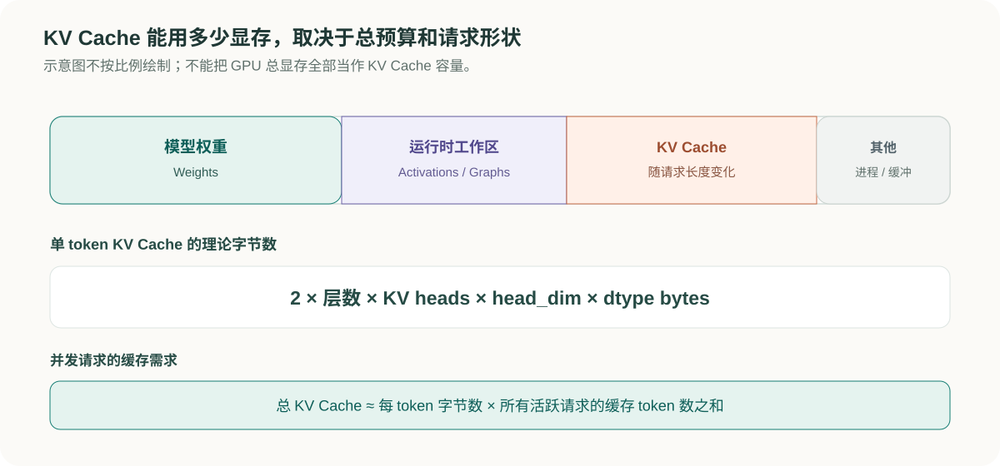

第 08 章 · KV Cache 与内存管理
KV Cache 容量规划：从每 Token 字节数到运行时容量
权重能放进 GPU，不代表服务能同时容纳很多长上下文请求。真正决定并发容量的，是模型结构、缓存 dtype、上下文长度、并行分片和运行时可用显存共同形成的 KV Cache 预算。
把 KV Cache 想成每条活跃请求随身携带的一份“注意力历史”。模型每生成一个 token，就会为各层产生新的 Key 和 Value；后续 Decode 读取这些历史状态，而不必重新计算整个 Prompt。上下文越长、同时运行的请求越多，缓存就越大。要估算它，第一步不是看模型参数量，而是看每层究竟保存多少个 KV heads。
读完这一章，你应该能够
- 从层数、KV heads、head dimension、K/V 两份张量和 dtype 推导每 token 缓存字节数。
- 计算单请求和多并发请求的理论 KV Cache 需求。
- 解释 TP 分片、混合注意力和 Block Pool 为什么会改变简单估算。
- 区分权重量化与 KV Cache dtype，并理解 FP8 scale、Offloading 和监控指标。

8.1 从 Attention 结构推导公式
对标准全注意力 Transformer 的一层，假设每个 token 都要保存 Key 和 Value。若每个 KV head 的维度是 D_head，共有 H_KV 个 KV heads，那么单层、单 token 的缓存元素数量是：
2 × H_KV × D_head前面的 2 来自 K 和 V 两份张量。再乘以模型层数、缓存 token 数和每个元素占用的字节数，就得到一个标准模型的理论估算：
M_KV ≈ 2 × L × H_KV × D_head × T × B| 符号 | 含义 | 如何取得 |
|---|---|---|
L | 参与该缓存结构的 Transformer 层数 | 模型配置；并行分片时使用本 rank 的层数 |
H_KV | 每层 Key / Value head 数量 | 优先看 num_key_value_heads，不要误用 Query heads |
D_head | 每个 KV head 的维度 | 常见情况下为 hidden size / attention heads |
T | 需要保留的 token 数 | 单请求上下文，或并发请求的 token 总量 |
B | 一个缓存元素的字节数 | BF16 / FP16 通常 2 bytes；FP8 payload 通常 1 byte |
若把每层 KV heads 和 head dimension 视为相同，公式就能直接用于手算。若模型各层采用不同注意力结构，更稳妥的表达是逐层求和：
M_KV ≈ T × Σ_l (2 × H_KV,l × D_head,l × B_l)这个公式仍然是理论 payload 估算，不包括 scale、对齐、页管理元数据和其他运行时开销。对于 MLA、滑动窗口、混合 Attention / Mamba、跨层共享或其他特殊缓存结构，必须按实际 KV Cache spec / group 布局计算，不能把标准 MHA 公式直接套过去。
8.2 一个可复算的 GQA 算例：为什么要数 KV heads？
用一组常见 8B 级 GQA 模型结构做教学计算：32 层、8 个 KV heads、每个 head 维度 128，缓存使用 BF16（2 bytes）。这里的重点是计算方法；真实部署仍要从目标 checkpoint 的配置文件读取结构。
L = 32
H_KV = 8
D_head = 128
B = 2 bytes # BF16
per_token = 2 * L * H_KV * D_head * B
= 2 * 32 * 8 * 128 * 2
= 131,072 bytes
= 128 KiB / token现在把上下文长度代进去：
| 场景 | 计算 | 理论 KV Cache |
|---|---|---|
| 单请求，8,192 tokens | 128 KiB × 8,192 | 1 GiB |
| 8 个请求，各 8,192 tokens | 1 GiB × 8 | 8 GiB |
| 32 个请求，各 8,192 tokens | 1 GiB × 32 | 32 GiB |
注意 GQA 的关键：公式使用的是 8 个 KV heads，而不是 32 个 Query heads。若错误地把 Query heads 代入，估算会放大四倍。MQA / GQA 的目的之一，就是减少需要保存的 K/V 头数。
算例假设：单 GPU、无 TP 分片、标准全注意力、每层结构相同、无滑动窗口、无 MLA / Mamba、BF16 K/V payload，不含额外 scale 和对齐开销。它不是某台 GPU 的实测容量，也不意味着 32 GiB 的缓存一定能装进 32 GiB 显存。
8.3 交互式容量计算器：改变一个参数，观察缓存如何增长
下面用刚才的结构作为默认值。修改层数、KV heads、head dimension、缓存 dtype、上下文长度或并发请求数，计算器会同步更新理论 payload。它只用于标准全注意力结构的估算，不代替 vLLM 启动后的实际容量规划。
标准 Transformer KV Cache 估算器
以上为理论 K/V payload，不含 scale、对齐、Block Pool 余量和运行时开销。
把 FP16 / BF16 换成 FP8，理论 payload 会接近减半；但真实节省还要看 scale、skip layers、硬件与 Attention backend。把并发从 8 提高到 32，则会近似线性增加总缓存需求，直到请求长度分布、缓存淘汰或其他系统约束介入。
8.4 理论需求不等于实际 GPU 预算
GPU 显存还要容纳权重、激活、CUDA Graph / Kernel 工作区、通信缓冲区、权重更新缓冲区以及其他进程的分配。真正可以交给 KV Cache 的空间，是这些占用和安全余量扣除之后的结果。
可用于 KV Cache 的空间 ≈ 设备内存 − 权重 − 运行时工作区 − 通信缓冲 − 其他占用 − 余量当前 vLLM 的显存规划路径还会受到 extensible KV Cache 影响：在支持的平台上，它可以在模型 warmup 和 CUDA Graph 捕获之后，根据实际剩余设备内存规划缓存。当前源码对 gpu_memory_utilization 的默认值也区分 extensible cache 与估算式路径，因此不要从旧文章复制一个固定 0.9 或 0.95。
gpu_memory_utilization是当前实例的设备内存预算比例，不是 KV Cache 使用率本身。kv_cache_memory_bytes可显式控制每 GPU 的 KV Cache 字节数；设置后忽略gpu_memory_utilization的 KV Cache 自动预算逻辑。- 如果有多个 vLLM 实例或其他进程共享 GPU，必须为未被当前实例测量的分配预留空间。
8.5 Block Pool 与混合模型：为什么不能只数 num_gpu_blocks？
vLLM 会把 KV Cache 组织成可分配的 Block Pool。请求进入时，KV Cache Manager 根据当前计算进度和请求需要的 token 槽位分配 blocks；请求结束后，不再被引用的块可以回到空闲队列。如果启用了 Prefix Caching，一些已经计算过的块可能仍保留哈希映射，作为可被淘汰的缓存候选。
对标准、单一 KV Cache group，可以用 num_gpu_blocks × block_size 粗略理解 token 容量。但混合 Attention / Mamba、滑动窗口、不同 group block size 或 DCP 分片下，这个乘法可能给出错误结论。当前 CacheConfig 还会计算 group-aware 的 kv_cache_size_tokens 和 kv_cache_max_concurrency；后者描述每个 DP engine 在 max_model_len 长度下的最大并发估算。
正确的观察顺序：先看启动日志中每个 KV Cache group 的结构和实际分配，再看每个 DP engine 的 token 容量与最大并发估算。不要把不同 group 的物理 block 数直接相加，也不要把一个模型的 Block Size 当成所有平台和所有层的通用值。
8.6 KV Cache dtype 与 Offloading：压缩和分层存储是两条路线
KV Cache dtype：减少每个元素的 payload
当硬件、模型和 Attention backend 支持时，可以考虑 FP8 KV Cache。相较 BF16 / FP16，FP8 payload 的单元素字节数约为一半；但量化 scale、对齐、Kernel 支持和数值误差都需要纳入评估。
# 示例：只有在当前模型、设备与 Attention backend 支持时使用
vllm serve <model> --kv-cache-dtype fp8当前文档区分无校准默认 scale 与基于数据集的校准路径；对某些更敏感的层，还可以用 --kv-cache-dtype-skip-layers 保留原始精度。不要把“FP8 缓存理论上更省”直接等同于“每个模型都能无损、无额外成本地翻倍并发”。
Offloading：把已完成的 KV block 放到更大但更慢的存储层
KV Offloading 与 FP8 不同：它不是改变每个 K/V 元素的表示，而是把可复用的已完成 KV blocks 从 GPU 缓存层复制到 CPU pinned memory 或其他支持的存储层。当前官方 OffloadingConnector 文档列出的支持平台包括 CUDA、ROCm 和 XPU；不同 tier、传输路径和并行布局有各自约束。
Offloading 可以扩展可保留的前缀工作集，但命中时需要搬运数据。若传输链路慢、缓存命中很少或块被频繁淘汰，收益可能被搬运成本抵消。它不是把所有热缓存自动、无代价地搬到 CPU / SSD 的通用开关。
8.7 用指标定位容量压力：不要设一个万能红线
理论计算告诉你“可能需要多少”，运行时指标告诉你“现在发生了什么”。建议同时观察缓存使用率、请求队列、抢占、前缀命中和请求延迟：
| 指标 | 观察什么 | 应该怎样解读 |
|---|---|---|
vllm:kv_cache_usage_perc | KV Cache blocks 的使用比例 | 持续高位时，结合等待队列和抢占判断是否限制接纳 |
vllm:num_requests_running | 当前运行请求数 | 与 waiting 一起看，判断服务是否在积压 |
vllm:num_requests_waiting | 等待请求数 | 持续增长时，检查到达率、调度预算和缓存容量 |
vllm:num_preemptions_total | 累计抢占次数 | 在相同时间窗口看增量；持续增加可能表示 KV Cache 压力 |
vllm:prefix_cache_hits / queries | 前缀缓存命中与查询计数 | 与 Prefill 时间和 TTFT 一起看，不能只看累计总数 |
vllm:time_to_first_token_seconds | 首 token 延迟 | 受排队、Prefill、缓存命中和网络等因素共同影响 |
vllm:inter_token_latency_seconds | 相邻输出 token 延迟 | 更适合观察 Decode 阶段的稳定性与尾延迟 |
不要把“KV Cache 使用率达到 80% 就告警”或“空闲块低于 100 就扩容”当成所有部署的硬规则。合理阈值取决于流量突发性、上下文长度分布、服务 SLA 和扩容时间。最好把使用率、waiting、抢占增量、TTFT、ITL 和 token 吞吐放在同一时间线上分析。
本章自检
- 为什么 GQA 模型计算 KV Cache 时要使用 KV heads，而不是 Query heads？
- 为什么单 token 的理论缓存字节数不能直接代表一张 GPU 能容纳多少并发请求？
- 为什么混合 Attention / Mamba 模型不能简单使用
num_gpu_blocks × block_size估算总 token 容量？ - FP8 KV Cache 与 CPU Offloading 分别改变了缓存系统的哪一部分？
- 如果 KV Cache 使用率很高但 waiting 和抢占都没有增长，为什么还不能仅凭一个指标断定服务已经过载？
下一章进入 Automatic Prefix Caching：当不同请求共享完全相同的 token 前缀时，vLLM 如何判断这些 K/V 状态可以复用，以及命中边界、缓存生命周期和多租户隔离如何工作。
参考资料与源码入口
- vLLM, Metrics：V1 Prometheus 指标、KV Cache 使用率与请求延迟。
- vLLM, Quantized KV Cache：FP8 KV Cache、scale 校准与 skip layers。
- vLLM, KV Offloading Usage Guide：OffloadingConnector、CPU tier 和多层存储约束。
- 模型结构参考：Llama 3.1 8B Instruct config.json。本章的 32 层、8 KV heads、128 head dimension 算例按这一类 GQA 结构展示。
- 源码：CacheConfig、KV Cache planning、KV Cache Manager。
理论算例与交互计算器只计算标准全注意力 K/V payload。它们不包含特殊缓存结构、scale、对齐、分片差异和运行时开销。上游代码审校 commit：0bf9c07376a4091627e6cb50dd85464361db452c。